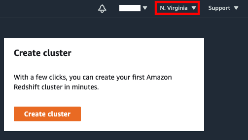
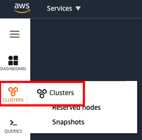
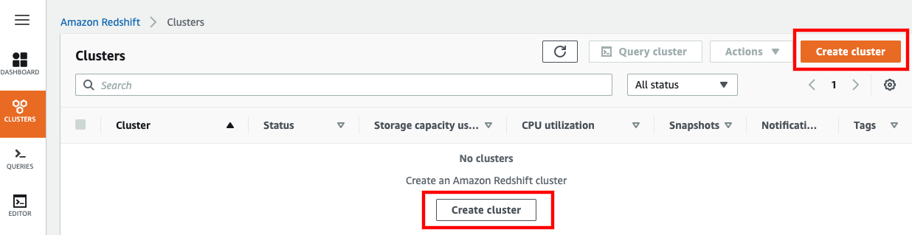
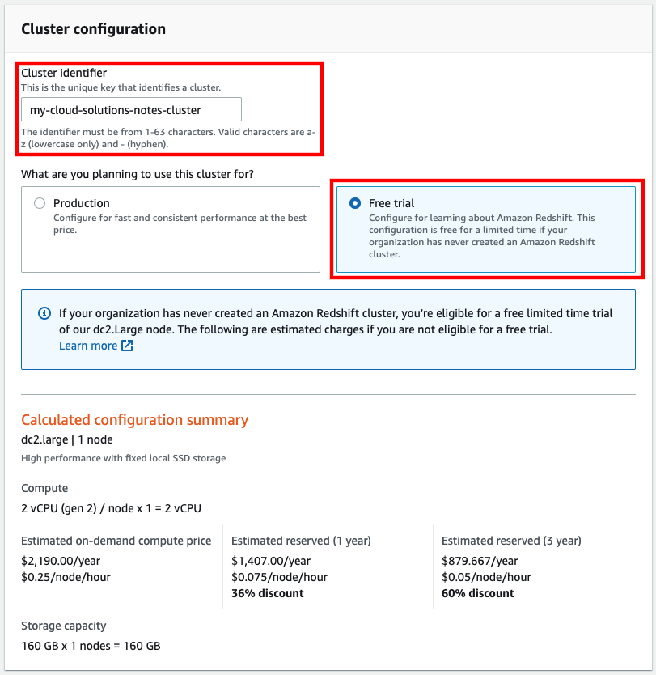
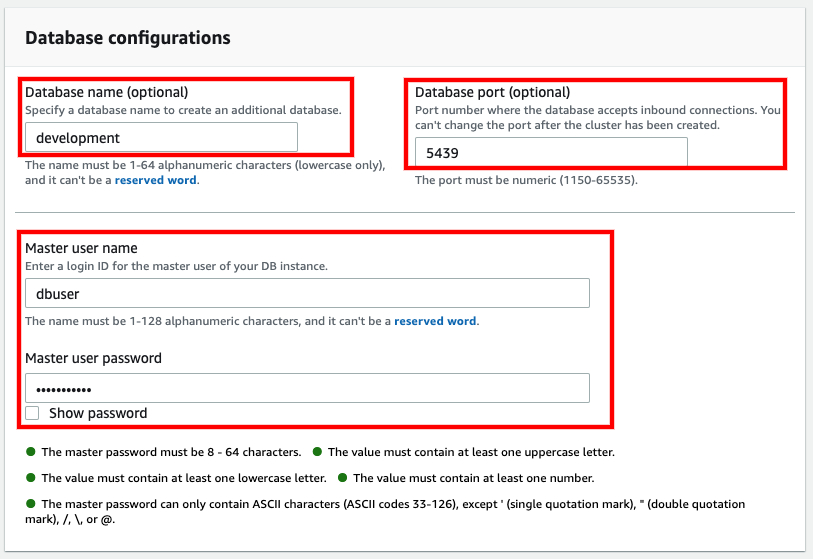

В правом верхнем углу консоли выберите AWS регион, в котором планируется создание кластера:

В левой навигационной панели выберите пукт меню “Clusters” (Кластеры), после чего нажмите кнопку “Create cluster” (Создать кластер):

Укажите значение поля “Cluster identifier” (Идентификатор кластера) и выберите конфигурацию “Free trial” (Бесплатная пробная версия):
Важно: Конфигурация ‘Free trial’ предоставляет возможность работы с кластером Amazon Redshift в течение двух месяцев бесплатно (750 часов на один узел в месяц на протяжении двух месяцев). Если кластер имеет несколько узлов, бесплатный пробный период истечёт раньше двух месяцев. По истечению предоставленного времени (если преследуются обучающие цели) необходимо снять слепок с кластера (для дальнейших продуктивных действий, если потребуется) и удалить кластер. Несвоевременное удаление приведёт к начислению оплаты за использование Amazon Redshift.
Примечание: идентификатор кластера должен быть уникальным и состоять из следующих символов:
* строчные буквы английского алфавита (a - z),
* дефис (-).
Длина идентификатора должна составлять от 1 до 63 символов.

В разделе “Database configuration” (Конфигурация базы данных) опционально укажите значения для полей “Database name” (Имя базы данных) и “Database port” (Порт базы данных), а также обязателько укажите значения для “Master user name” (Имя главного пользователя) и “Master user password” (Пароль главного пользователя):

В разделе “Cluster permissions” (Разрешения для кластера) выберите IAM роль, созданную ранее на предыдущем этапе (добавить ссылку) и нажмите кнопку “Add IAM role” (Добавить IAM роль):